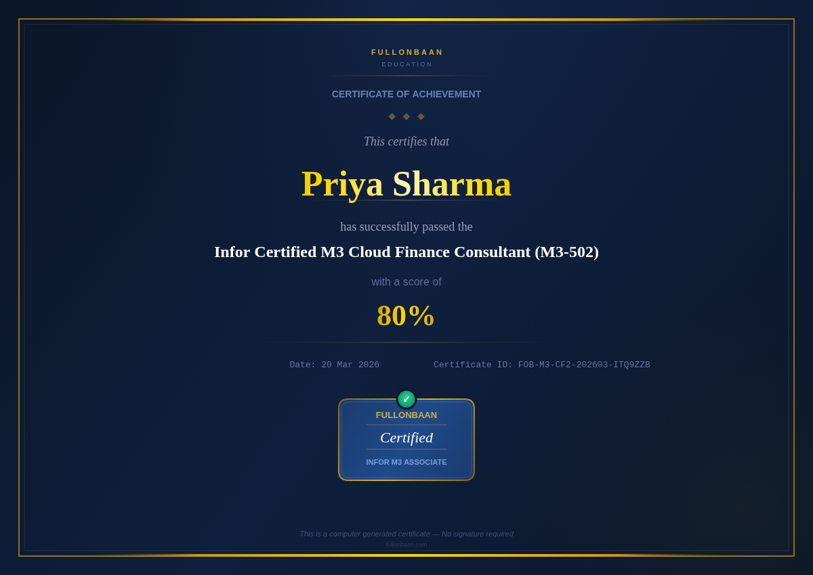

Infor LN Certification Suite
INFOR LN
CERTIFICATION
EXAMS
Prove your Infor LN expertise with an industry-recognized credential. 7 specialized tracks. Instant digital certificate.
5 candidates certified this week
500+ candidates certified
4.8/5 rating
12 countries
Exam Standards
Official Infor LN Benchmark
20 high-precision technical questions per exam
70% pass threshold · 45-minute time limit
Instant digital certificate upon success
Score report emailed automatically
Secure UPI payment · ₹499 per exam

Sample Certificate Preview
Technical Tracks
INFOR LN TECHNICAL CERTIFICATIONS

LN-DEV
⭐ Most Popular
Infor LN Development
FullonBaan Certified Infor LN Developer
Technical Track

LN-BOD
Infor BOD
FullonBaan Certified Infor BOD Specialist
Technical Track

LN-ION
🔥 Trending
Infor ION
FullonBaan Certified Infor ION Integration Specialist
Technical Track

LN-EXT
Infor LN Extensibility
FullonBaan Certified LN Extensibility Expert
Technical Track
Functional Tracks
INFOR LN FUNCTIONAL CERTIFICATIONS

LN-FIN
Infor LN Finance
FullonBaan Certified LN Finance Consultant
Functional Track

LN-SCM
Infor LN SCM
FullonBaan Certified LN Supply Chain Expert
Functional Track

LN-MFG
Infor LN Manufacturing
FullonBaan Certified LN Manufacturing Consultant
Functional Track
Select a track above to unlock registration
Choose from 4 technical or 3 functional certification tracks. Your registration form will appear here once you pick one.
← Select a certification track above to begin
Candidate Registration
All fields are required. Your name and email will appear on your certificate if you pass.
Please enter your first and last name.
Please enter a valid mobile number.
Please enter a valid email address.
- ₹499 fee per track, payable via UPI. You will be directed to payment after registration.
- 20 multiple-choice questions — some require selecting multiple correct answers.
- You have 45 minutes from the moment you click Begin Exam.
- A minimum of 70% (35 / 50 points) is required to pass and earn your FullonBaan certificate.
- Results are shown immediately. Confirmation email and certificate (if passed) are sent automatically.
- Do not refresh or navigate away — your progress will be lost.